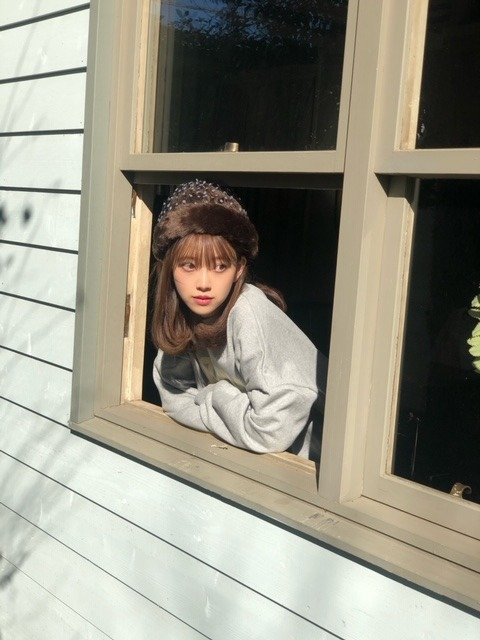
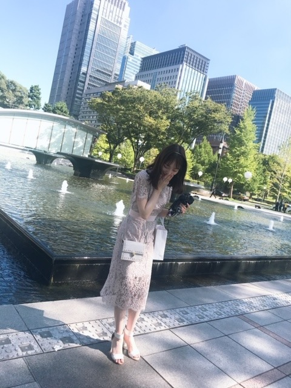
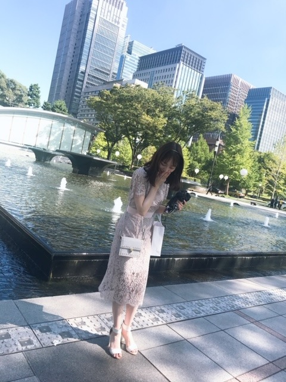
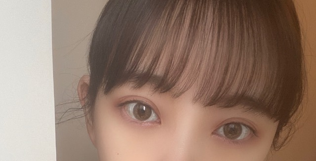
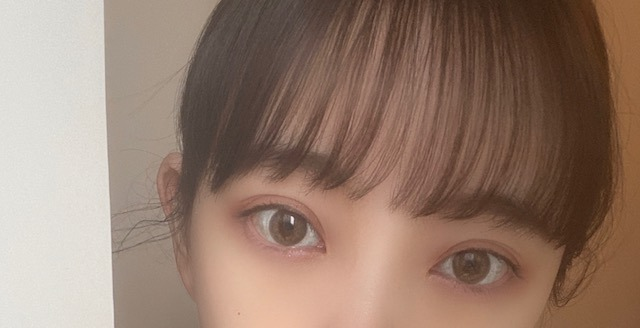

2020/0426Sunplaylist
昨日は寝る前に
ハッピーデスデイ2Uを観て
今日はプリティプリンセスを
今日はプリティプリンセスを
久しぶりに観ました❁
アンハサウェイさん初主演の作品で
普通に暮らしていた女の子が実は
プリンセスだったというお話です
特にすきなシーンは
すっぴんボサボサヘアから
すっぴんボサボサヘアから
美少女に大変身して鏡を見るシーン
好きすぎて尊すぎて
鳥肌がたって泣けてきます...
意識やメイクで女の子はうんと可愛くなれる
そんな魔法みたいなシーン
*☽:ﾟ･⋆｡✰
プリティプリンセスの世界観を
写真で表すとしたら

素朴な女の子
が、

キラキラプリンセスになる
っていうかんじです
最後のお庭のシーンも素敵なの...
ロマンチック...
大好きな作品の1つです
大好きな作品の1つです
是非みてみてください☺︎

さて、
今日は私の
[ 最近よく聴くプレイリスト ]

さて、
今日は私の
[ 最近よく聴くプレイリスト ]
#未央奈のplaylist
を公開したいと思います☺︎
普段、曲を聴くときは
歌詞を見ながら聴くことが多いのですが
歌詞の意味を考えたり作詞した人の気持ちに
なってみたり歌詞の世界観に浸ってみたり...
音楽1つで 気分があがったり
悲しい気持ちが軽くなったり
私の何気ない日常には
音楽は、必要不可欠です
みなさんはどんな曲を聴きますか？
" 洋楽 "
I AM / Hilary Duffさん
if you come back / Blueさん
Love is easy / McFlyさん
All About you / Mc Flyさん
Permission / New Hope Clubさん
Medicine / New Hope Clubさん
Let Me Down Slow / New Hope Clubさん
Love story / Taylor Swiftさん
You Belong With Me / Taylor Swiftさん
I Love Loving You / The Vampsさん
Just my type / The Vampsさん
Another World / The Vampsさん
Personal / The Vampsさん
One thing / One Directionさん
イギリスのバンドが昔から
姉の影響で好きですね☺︎
MVもいい感じのゆるさがオシャレです
" 邦楽 "
永遠はきらい / 上白石萌音さん
リフレクション / 伊藤恵里さん
Flavor Of Life / 宇多田ヒカルさん
漂白 / あいみょんさん
テレパしい / あいみょんさん
ら、のはなし / あいみょんさん
好きって言ってよ / あいみょんさん
正夢 / スピッツさん
メッセージ / チャットモンチーさん
バスロマンス / チャットモンチーさん
染まるよ /チャットモンチーさん
消えない星 / チャットモンチーさん
例えば、 / チャットモンチーさん
4秒 / aikoさん
サイダー / aikoさん
星のない世界 / aikoさん
カタオモイ / Aimerさん
花束 / back numberさん
SISTER / back numberさん
光の街 / back numberさん
僕の名前を / back numberさん
泡と羊 / back numberさん
世田谷ラブストーリー / back numberさん
頬を濡らす雨のように / backnumberさん
one room / back numberさん
リッツパーティー / back numberさん
だいじなこと / back numberさん
march / back numberさん
シーグラス(カバー) / back numberさん
花の名 / BUMP OF CHICKENさん
そっけない / RADWIMPSさん
祝祭 / RADWIMPSさん
グランドエスケープ / RADWIMPSさん
夢灯籠 / RADWIMPSさん
スパークル / RADWIMPSさん
なんでもないや / RADWIMPSさん
One / RIP SLYMEさん
黄昏サラウンド / RIP SLYMEさん
Tales / RIP SLYMEさん
パール / THE YELLOW MONKEYさん
この恋のかけら / THE YELLOW MONKEYさん
美影意志 / UVERworldさん
浮世CROSSING / UVERworldさん
Driving today / YUIさん
No way / YUIさん
I will love you / YUIさん
It's all right / YUIさん
Simply white / YUIさん
LIFE / YUIさん
Understand / YUIさん
ビスケット / YUKIさん
エスケープ / 手嶋葵さん
朝ごはんの歌 / 手嶋葵さん
是非、歌詞を見ながら
聞いていただきたい曲ばかり!
" KPOP "
Bad boy / Red Velvetさん
Peek-A-Boo / Red Velvetさん
SAPPY / Red Velvetさん
Psycho / Red Velvetさん
Umpah Umpah / Red Velvetさん
DUN DUN / EVERGLOWさん
NO LIE / EVERGLOWさん
Twenty-three / IUさん
BBIBBI / IUさん
Blueming / IUさん
Hey.Bae.Like it. / IZ*ONEさん
Up / IZ*ONEさん
Airplane / IZ*ONEさん
SPACESHIP / IZ*ONEさん
LIAR LIAR / OH MY GIRLさん
TURTLE / TWICEさん
Wishing / TWICEさん
Feel Special / TWICEさん
breakthrough / TWICEさん
Beautiful / Wanna Oneさん
Say yes / LOCO.punchさん
All With You / テヨンさん
麗 を見終わって、今は
恋するジェネレーション
を観ています
泣けるしキュンキュンするし良きです☺︎

またいい歌があったらご紹介します!
普段、曲を聴くときは
歌詞を見ながら聴くことが多いのですが
歌詞の意味を考えたり作詞した人の気持ちに
なってみたり歌詞の世界観に浸ってみたり...
音楽1つで 気分があがったり
悲しい気持ちが軽くなったり
私の何気ない日常には
音楽は、必要不可欠です
みなさんはどんな曲を聴きますか？
" 洋楽 "
I AM / Hilary Duffさん
if you come back / Blueさん
Love is easy / McFlyさん
All About you / Mc Flyさん
Permission / New Hope Clubさん
Medicine / New Hope Clubさん
Let Me Down Slow / New Hope Clubさん
Love story / Taylor Swiftさん
You Belong With Me / Taylor Swiftさん
I Love Loving You / The Vampsさん
Just my type / The Vampsさん
Another World / The Vampsさん
Personal / The Vampsさん
One thing / One Directionさん
イギリスのバンドが昔から
姉の影響で好きですね☺︎
MVもいい感じのゆるさがオシャレです
" 邦楽 "
永遠はきらい / 上白石萌音さん
リフレクション / 伊藤恵里さん
Flavor Of Life / 宇多田ヒカルさん
漂白 / あいみょんさん
テレパしい / あいみょんさん
ら、のはなし / あいみょんさん
好きって言ってよ / あいみょんさん
正夢 / スピッツさん
メッセージ / チャットモンチーさん
バスロマンス / チャットモンチーさん
染まるよ /チャットモンチーさん
消えない星 / チャットモンチーさん
例えば、 / チャットモンチーさん
4秒 / aikoさん
サイダー / aikoさん
星のない世界 / aikoさん
カタオモイ / Aimerさん
花束 / back numberさん
SISTER / back numberさん
光の街 / back numberさん
僕の名前を / back numberさん
泡と羊 / back numberさん
世田谷ラブストーリー / back numberさん
頬を濡らす雨のように / backnumberさん
one room / back numberさん
リッツパーティー / back numberさん
だいじなこと / back numberさん
march / back numberさん
シーグラス(カバー) / back numberさん
花の名 / BUMP OF CHICKENさん
そっけない / RADWIMPSさん
祝祭 / RADWIMPSさん
グランドエスケープ / RADWIMPSさん
夢灯籠 / RADWIMPSさん
スパークル / RADWIMPSさん
なんでもないや / RADWIMPSさん
One / RIP SLYMEさん
黄昏サラウンド / RIP SLYMEさん
Tales / RIP SLYMEさん
パール / THE YELLOW MONKEYさん
この恋のかけら / THE YELLOW MONKEYさん
美影意志 / UVERworldさん
浮世CROSSING / UVERworldさん
Driving today / YUIさん
No way / YUIさん
I will love you / YUIさん
It's all right / YUIさん
Simply white / YUIさん
LIFE / YUIさん
Understand / YUIさん
ビスケット / YUKIさん
エスケープ / 手嶋葵さん
朝ごはんの歌 / 手嶋葵さん
是非、歌詞を見ながら
聞いていただきたい曲ばかり!
" KPOP "
Bad boy / Red Velvetさん
Peek-A-Boo / Red Velvetさん
SAPPY / Red Velvetさん
Psycho / Red Velvetさん
Umpah Umpah / Red Velvetさん
DUN DUN / EVERGLOWさん
NO LIE / EVERGLOWさん
Twenty-three / IUさん
BBIBBI / IUさん
Blueming / IUさん
Hey.Bae.Like it. / IZ*ONEさん
Up / IZ*ONEさん
Airplane / IZ*ONEさん
SPACESHIP / IZ*ONEさん
LIAR LIAR / OH MY GIRLさん
TURTLE / TWICEさん
Wishing / TWICEさん
Feel Special / TWICEさん
breakthrough / TWICEさん
Beautiful / Wanna Oneさん
Say yes / LOCO.punchさん
All With You / テヨンさん
麗 を見終わって、今は
恋するジェネレーション
を観ています
泣けるしキュンキュンするし良きです☺︎

またいい歌があったらご紹介します!
ちなみに乃木坂46の中で
(もちろん全部ですが)
特に、すきな歌プレイリストは
別れ際、もっと好きになる
君に贈る花がない
三角の空き地
ゴルゴンゾーラ
当たり障りのない話
春のメロディー
他の星から
アナスターシャ
シークレットグラフィティー
空気感
やさしさとは
失いたくないから
ちなみにすきなMVプレイリストは
立ち直り中
スカウトマン
大人への近道
ハルジオンが咲く頃
新しい世界
キャラバンは眠らない
アナスターシャ
今、話したい誰かがいる
ガールズルール
滑走路
女は一人じゃ眠れない
サヨナラの意味
かなぁ
みなさんの好きな
乃木坂の歌、乃木坂以外の歌もお聞かせください!
2020/04/26 20:12
コメント(865)
未央奈のプレイリストで自分がはまってた曲
BUMP OF CHICKEN 「花の名」だけでした(笑)
BUMP OF CHICKEN 「花の名」だけでした(笑)
未央奈ちゃん！こんばんは〜！
初めてコメントします！
私は坂道グループ全般大好きで乃木坂の曲だと、何度目の青空か？、サヨナラの意味、バレッタ、きっかけが特に大好きです！
学校行く前乃木坂の曲を1曲聞いてから家を出ます
坂道グループ以外だと、演歌歌手の坂本冬美さんが好きです！渋いですよね、笑
声がとても落ち着いていて心に響くんです！
良かったら聞いてみてくださいね✨
聞いたら感想教えてください(* ॑꒳ ॑* )⋆*
コロナウイルスお互い気をつけましょう！
それでは失礼致します！
初めてコメントします！
私は坂道グループ全般大好きで乃木坂の曲だと、何度目の青空か？、サヨナラの意味、バレッタ、きっかけが特に大好きです！
学校行く前乃木坂の曲を1曲聞いてから家を出ます
坂道グループ以外だと、演歌歌手の坂本冬美さんが好きです！渋いですよね、笑
声がとても落ち着いていて心に響くんです！
良かったら聞いてみてくださいね✨
聞いたら感想教えてください(* ॑꒳ ॑* )⋆*
コロナウイルスお互い気をつけましょう！
それでは失礼致します！
堀ちゃん！更新ありがとう！
堀ちゃん、洋画もよく見るんだね！
おすすめの映画リストもブログで
あげてほしい！待ってます！
映画のあらすじを堀ちゃんの
写真で伝えてくれるのめちゃめちゃ
わかりやすいし見てみたくなる！
ら、のはなし！自分も好きです！
バックナンバーもいいよね！
堀ちゃんのプレイリスト
聞いてみます！
感想書きますね〜
乃木坂は
君に贈る花がないが好きです！
最近はI see…にめちゃハマってます！
もちのろんアナスターシャも！！！
個人的に
サヨナラの意味は聴いたら
泣いちゃう神曲です笑
次回の更新も楽しみに待ってます！
では！
体調気をつけてね！
おやすみおな〜！
堀ちゃん、洋画もよく見るんだね！
おすすめの映画リストもブログで
あげてほしい！待ってます！
映画のあらすじを堀ちゃんの
写真で伝えてくれるのめちゃめちゃ
わかりやすいし見てみたくなる！
ら、のはなし！自分も好きです！
バックナンバーもいいよね！
堀ちゃんのプレイリスト
聞いてみます！
感想書きますね〜
乃木坂は
君に贈る花がないが好きです！
最近はI see…にめちゃハマってます！
もちのろんアナスターシャも！！！
個人的に
サヨナラの意味は聴いたら
泣いちゃう神曲です笑
次回の更新も楽しみに待ってます！
では！
体調気をつけてね！
おやすみおな〜！
洋楽のhop
Hope (Twista)
Faith Evans聴いてみて
コーチカーターっていう映画のラストで流れるんだけどいいのよ ぜひ映画も観てほしいね
ぜひ映画も観てほしいね
Hope (Twista)
Faith Evans聴いてみて
コーチカーターっていう映画のラストで流れるんだけどいいのよ
ブログ更新ありがとう！
乃木坂の曲はやっぱりサヨナラの意味かなぁ
何度聴いても泣けてくるいい曲です
他のアーティストはGReeeeNのsakamotoって曲がいいですよ
MVも面白いですし歌詞の内容もとってもいいですよー
乃木坂の曲はやっぱりサヨナラの意味かなぁ
何度聴いても泣けてくるいい曲です
他のアーティストはGReeeeNのsakamotoって曲がいいですよ
MVも面白いですし歌詞の内容もとってもいいですよー
RedVelvet、俺も好きー！
同い年のスルギが、かわいい！
「Redflavor」と「Happiness」が特に好き！
ラッドも好きなんやけど、アルバム「絶体絶命」の曲が特におすすめ！
「透明人間18号」は特に今の季節にピッタリやと思うよー！
同い年のスルギが、かわいい！
「Redflavor」と「Happiness」が特に好き！
ラッドも好きなんやけど、アルバム「絶体絶命」の曲が特におすすめ！
「透明人間18号」は特に今の季節にピッタリやと思うよー！
こんにちは。
この自粛生活が始まってから映画とか音楽と向き合う時間が増えて大切さを感じてます。紹介していただいたplaylist聴いてみます。映画や音楽からインプットされて、自分の仕事に活かしている姿勢素晴らしいです！応援しています！また良い映画とか音楽紹介して下さい。
この自粛生活が始まってから映画とか音楽と向き合う時間が増えて大切さを感じてます。紹介していただいたplaylist聴いてみます。映画や音楽からインプットされて、自分の仕事に活かしている姿勢素晴らしいです！応援しています！また良い映画とか音楽紹介して下さい。
BUMP入ってるのめちゃくちゃ嬉しいな〜
いろんなアーティストの曲きいてそれをセットリストにするのってめちゃワクワクしますよね！
他の人に自分の好きな曲を紹介するのはほんとに恐縮ですが、僕はUNISON SQUARE GARDENが好きです。「君の瞳に恋してない」がめちゃいいです。BUMPでも66号線とか望遠のマーチとか好きです。
こんな状況であらためて思うのは音楽の力ってすごいなって思います。
また全部終わったらライブとか行きたいです！それまで音楽聴くことにします
いろんなアーティストの曲きいてそれをセットリストにするのってめちゃワクワクしますよね！
他の人に自分の好きな曲を紹介するのはほんとに恐縮ですが、僕はUNISON SQUARE GARDENが好きです。「君の瞳に恋してない」がめちゃいいです。BUMPでも66号線とか望遠のマーチとか好きです。
こんな状況であらためて思うのは音楽の力ってすごいなって思います。
また全部終わったらライブとか行きたいです！それまで音楽聴くことにします
ブログ更新ありがとうございます。外出自粛中のなかで、頑張ってブログ更新して頂いて感謝してます。
MVはアナスターシャはもちろん好きですが、シンクロ二シティの生駒さんのダンスがカッコいいなと思います。
JUJU さんのjazzのアルバムはお薦めです。
普段洋楽聴かないので聴いてみます。
どの未央奈さんもそれぞれ素敵です！
JUJU さんのjazzのアルバムはお薦めです。
普段洋楽聴かないので聴いてみます。
どの未央奈さんもそれぞれ素敵です！
The Vamps 聴いてるなら是非Missing you も聴いて欲しい
Unfamiliar聞いて欲しい( •̥ ˍ •̥ )
ナムドヒョンとハンギョルの曲なんだけどめっちゃいい！
乃木坂のMVはサヨナラの意味とか今、話したい誰かがいるとかのストーリーがあるやつが好き( ¨̮ )
ナムドヒョンとハンギョルの曲なんだけどめっちゃいい！
乃木坂のMVはサヨナラの意味とか今、話したい誰かがいるとかのストーリーがあるやつが好き( ¨̮ )
乃木坂以外
❶ray(BUMP OF CHICKEN)
❷スノースマイル(BUMP OF CHICKEN)
❸title of mine(BUMP OF CHICKEN)
乃木坂
❶シンクロニシティ
❷何度目の青空か
❸サヨナラの意味
❸風船は生きている
❸新しい世界
❸きっかけ
っていうか、
乃木坂ちゃんはあげたらキリがねえです笑
❶ray(BUMP OF CHICKEN)
❷スノースマイル(BUMP OF CHICKEN)
❸title of mine(BUMP OF CHICKEN)
乃木坂
❶シンクロニシティ
❷何度目の青空か
❸サヨナラの意味
❸風船は生きている
❸新しい世界
❸きっかけ
っていうか、
乃木坂ちゃんはあげたらキリがねえです笑
K-POP、もしよかったらSEVENTEENもきいてみてください！
私が楽曲として一番好きなのは「Don't wanna cry」！
MVが一番好きなのは「HIT」！
歌詞がいいな〜と思うのは「Hug」！
SEVENTEENは作詞作曲の多くを自分たちでやってて13人全員の歌とダンスのレベルが高くて本当にかっこいいです！
人としてもアイドルとしても素敵な人達なのでよかったらきいてみてください！！◎
私が楽曲として一番好きなのは「Don't wanna cry」！
MVが一番好きなのは「HIT」！
歌詞がいいな〜と思うのは「Hug」！
SEVENTEENは作詞作曲の多くを自分たちでやってて13人全員の歌とダンスのレベルが高くて本当にかっこいいです！
人としてもアイドルとしても素敵な人達なのでよかったらきいてみてください！！◎
お疲れ様です。
とりあえず、今日聴いた曲です。
travis 「ｃｌｏｓｅｒ」、キム ワイルド 「you came」、ウィーザー 「アイランド ザ サン」、 ジョンレノン 「マザー」、オアシス 「ドント ストップ クライミング ユアー ハート アウト」、boowy 「ドント アスク ミー」、「センシトゥ ラブ」、以上!
とりあえず、今日聴いた曲です。
travis 「ｃｌｏｓｅｒ」、キム ワイルド 「you came」、ウィーザー 「アイランド ザ サン」、 ジョンレノン 「マザー」、オアシス 「ドント ストップ クライミング ユアー ハート アウト」、boowy 「ドント アスク ミー」、「センシトゥ ラブ」、以上!
ブログ更新ありがとうございます！更新される度にわくわくしながら読ませてもらってます！
好きな乃木坂の歌は
・アナスターシャ
・日常
・帰り道は遠回りしたくなる
・夜明けまで強がらなくてもいい
・Against
乃木坂以外の歌はXJAPANしか聞いてないですが
・紅
・X
・Born to be free
・Silent Jealousy
・Rusty Nail
です！ロック系の歌で堀さんが、聞いている歌とはジャンルが違いますが、聞いてくれたら嬉しいです！
オススメは「Born to be free」です！自由という意味の歌詞が多く出て来ますが、誰もが自由で夢の実現という前向きな意味が込められています！毎年目標や夢など書いていますが、その夢を叶えて欲しいと思ったので、この歌をオススメしました！これからも、頑張って下さい！
好きな乃木坂の歌は
・アナスターシャ
・日常
・帰り道は遠回りしたくなる
・夜明けまで強がらなくてもいい
・Against
乃木坂以外の歌はXJAPANしか聞いてないですが
・紅
・X
・Born to be free
・Silent Jealousy
・Rusty Nail
です！ロック系の歌で堀さんが、聞いている歌とはジャンルが違いますが、聞いてくれたら嬉しいです！
オススメは「Born to be free」です！自由という意味の歌詞が多く出て来ますが、誰もが自由で夢の実現という前向きな意味が込められています！毎年目標や夢など書いていますが、その夢を叶えて欲しいと思ったので、この歌をオススメしました！これからも、頑張って下さい！
朝ごはんの歌は知る人ぞ知る素敵な曲ですよ
やっほー未央奈ちゃん
レイちゃんがdTVの猿に会うのメーキングで未央奈ちゃんに[レイ]って呼ばれたって喜んでたでー！
良かったらレイ呼びを続けてあげてください。お願いします！！！
それじゃー体調には気おつけて元気で頑張ってねぇーー！！！
レイちゃんがdTVの猿に会うのメーキングで未央奈ちゃんに[レイ]って呼ばれたって喜んでたでー！
良かったらレイ呼びを続けてあげてください。お願いします！！！
それじゃー体調には気おつけて元気で頑張ってねぇーー！！！
みおなさ〜ん❤️
ブログ更新ありがと〜！！
自分もよく映画見ますよ
アクション系が多いのですが、、
特にワイルドスピードシリーズの曲は全てノリが良くて大好きです！！
Danza Kuduro Don Omarさん
Good Life g-easy & kehlaniさん
See You Again Wiz Khalifaさん など
ぜひ聴いてみて下さい！オススメです
おうち時間で乃木坂の皆さんのブログ見るの楽しみにしてます！
ブログ更新ありがと〜！！
自分もよく映画見ますよ
アクション系が多いのですが、、
特にワイルドスピードシリーズの曲は全てノリが良くて大好きです！！
Danza Kuduro Don Omarさん
Good Life g-easy & kehlaniさん
See You Again Wiz Khalifaさん など
ぜひ聴いてみて下さい！オススメです
おうち時間で乃木坂の皆さんのブログ見るの楽しみにしてます！
みおなちゃん沢山ブログ更新してくれて、可愛い写真いっぱい載せてくれて嬉しいです！！❤︎
わたしは、シンクロニシティの2番がすごく好きです
歌詞が胸にささってすごくいつもいい歌詞だなあと思います
MVも大好きです
あと、どんな髪型も似合うみおなちゃんの、わたしが1番好きな髪型は いつかできるから今日できるを歌ってた、ベストアーティスト2017のときの髪型です！
わたしは今年受験があるんですが、志望校に受かるかとても心配です
受験頑張れる言葉をかけて欲しいです ♀️
わたしは、シンクロニシティの2番がすごく好きです
歌詞が胸にささってすごくいつもいい歌詞だなあと思います
MVも大好きです
あと、どんな髪型も似合うみおなちゃんの、わたしが1番好きな髪型は いつかできるから今日できるを歌ってた、ベストアーティスト2017のときの髪型です！
わたしは今年受験があるんですが、志望校に受かるかとても心配です
受験頑張れる言葉をかけて欲しいです ♀️
いつもブログ、755の更新ありがとう！
UVERworld、back number、RADWIMPSの曲は自分も聴いているので嬉しいなー
特にUVERworldは大好きで美影意志、浮世CROSSINGのは自分のプレイリストに入っています！
AFTER LIFE、First Sight、OXYMORONはUVERworldの最新アルバムの中で特にオススメなのでぜひ聴いて欲しいなー
あとONE OK ROCKもオススメです
乃木坂で好きな曲はたくさんあるけどその中でも、「私、起きる。」、「泣いたっていいじゃないか？」、「きっかけ」、「転がった鐘を鳴らせ！」が好きです！
UVERworld、back number、RADWIMPSの曲は自分も聴いているので嬉しいなー
特にUVERworldは大好きで美影意志、浮世CROSSINGのは自分のプレイリストに入っています！
AFTER LIFE、First Sight、OXYMORONはUVERworldの最新アルバムの中で特にオススメなのでぜひ聴いて欲しいなー
あとONE OK ROCKもオススメです
乃木坂で好きな曲はたくさんあるけどその中でも、「私、起きる。」、「泣いたっていいじゃないか？」、「きっかけ」、「転がった鐘を鳴らせ！」が好きです！
更新ありがとう！いつも見てます！
KPOP大好きだからいつも聞いてるんだけど、ATEEZのWONDERLANDはめちゃめちゃ頭に残る曲だから聞いてみて欲しい！！
他にもいっぱいあるけどあり過ぎるから友達から勧められたこの曲だけにします！(笑)
잘 자용♡ 내일 봐！
KPOP大好きだからいつも聞いてるんだけど、ATEEZのWONDERLANDはめちゃめちゃ頭に残る曲だから聞いてみて欲しい！！
他にもいっぱいあるけどあり過ぎるから友達から勧められたこの曲だけにします！(笑)
잘 자용♡ 내일 봐！
おまごる、、！！私もK-popの中で1番好き♡ジニちゃん推しだったけど、(泣) LIAR LIARほんとに可愛らしい曲でいいよね、！ここまでコメント読んでくれたら嬉しいなあ、
乃木坂46の曲は
/ アナスターシャ / 忘却と美学 / 私、起きる / 逃げ水 / 釣り堀 / が好きです！他にもたくさんあります。どれも良い曲ばっかりですよねー！
/ アナスターシャ / 忘却と美学 / 私、起きる / 逃げ水 / 釣り堀 / が好きです！他にもたくさんあります。どれも良い曲ばっかりですよねー！
みおなちゃん沢山ブログ更新してくれて嬉しいです！いつも見てます！
わたしは乃木坂の曲のなかで、
シンクロニシティの2番が1番好きです！
歌詞もMVも大好きです
個人的に、みおなちゃんの髪型で1番好きなのは、
ベストアーティスト2017のときの髪型です！
でもやっぱり全部すきです
わたしは今年受験生なのですが、
志望校に合格できるか本当に不安です
受験頑張れるメッセージください！！
わたしは乃木坂の曲のなかで、
シンクロニシティの2番が1番好きです！
歌詞もMVも大好きです
個人的に、みおなちゃんの髪型で1番好きなのは、
ベストアーティスト2017のときの髪型です！
でもやっぱり全部すきです
わたしは今年受験生なのですが、
志望校に合格できるか本当に不安です
受験頑張れるメッセージください！！
お主、uverworld好きやったんかい
在るべき形きいておくれ！
めっちゃ心に染みるから
在るべき形きいておくれ！
めっちゃ心に染みるから
ブログ更新ありがとう！！
ハッピーデスデイ2U面白いよね！
1よりコメディー要素が増えた感じが好きー
おすすめのホラー映画もっと教えてほしいです！
最近見た中では目の見えない老人の家に窃盗しに行く「ドントブリーズ」って映画が面白かったよー！
ハッピーデスデイ2U面白いよね！
1よりコメディー要素が増えた感じが好きー
おすすめのホラー映画もっと教えてほしいです！
最近見た中では目の見えない老人の家に窃盗しに行く「ドントブリーズ」って映画が面白かったよー！
こんばんは〜
最近おすすめな歌は上白石萌音ちゃんの「ハッピーエンド」back numberさんの「ヒロイン」
元気をもらえる歌はいきものがかりさんの「じょいふる」
乃木坂の歌は毎日勉強しながら聞いていてストレスが溜まらないようにしてる。今年中3でただえさえ勉強がやばいのに受験がやばい。
自分の話は置いといて、最近上白石萌音ちゃんの歌声に感動してよく聴いてるから「永遠はきらい」聴いてみるね。
こんな世の中だけど頑張ろうね。
最近おすすめな歌は上白石萌音ちゃんの「ハッピーエンド」back numberさんの「ヒロイン」
元気をもらえる歌はいきものがかりさんの「じょいふる」
乃木坂の歌は毎日勉強しながら聞いていてストレスが溜まらないようにしてる。今年中3でただえさえ勉強がやばいのに受験がやばい。
自分の話は置いといて、最近上白石萌音ちゃんの歌声に感動してよく聴いてるから「永遠はきらい」聴いてみるね。
こんな世の中だけど頑張ろうね。
ワンオクのall mine とYes I am おすすめです！バラードを聞いて初めていいと思ったのがワンオクです
窓から〜みおな♪♪ヽ(´▽｀)/サディスティクな奴め〜〜〜♪♪♪ヽ(￣▽￣)ノ
未央奈ちゃん初コメントです(*´˘`*)♡
未央奈ちゃんに聞きたいことがあるんですけど、、
美顔ローラーとか使っていますか？？
使ってたらおすすめのもの教えて欲しいです、、！
良ければお値段安めの物でおすすめのものあったらそれも教えて欲しいです(^-^;
未央奈ちゃんに聞きたいことがあるんですけど、、
美顔ローラーとか使っていますか？？
使ってたらおすすめのもの教えて欲しいです、、！
良ければお値段安めの物でおすすめのものあったらそれも教えて欲しいです(^-^;
IUさんのFriday
堀ちゃんの
世代ではないけども
僕の好きな曲を
思いつくだけ
出してみます。
息もできない/ZARD
心を開いて/ZARD
Don't you see!/ZARD
マイ フレンド/ZARD
負けないで/ZARD
揺れる想い/ZARD
DAN DAN 心魅かれてく/ZARD
サヨナラは今もこの胸に居ます/ZARD
あの微笑みを忘れないで/ZARD
君に逢いたくなったら.../ZARD
きっと忘れない/ZARD
気まぐれロマンティック/いきものがかり
いつだって僕らは/いきものがかり
笑ってたいんだ/いきものがかり
心の花を咲かせよう/いきものがかり
Happy Smile Again/いきものがかり
1 2 3 ～恋がはじまる～/いきものがかり
風が吹いている/いきものがかり
風と未来/いきものがかり
B・BLUE/BOØWY
MARIONETTE/BOØWY
CLOUDY HEART/BOØWY
DREAMIN'/BOØWY
NO. NEW YORK/BOØWY
ONLY YOU/BOØWY
ON MY BEAT/BOØWY
フレンズ/REBECCA
My Revolution/渡辺美里
DEAR FRIENDS/パーソンズ
15の夜/尾崎豊
十七歳の地図/尾崎豊
卒業/尾崎豊
永遠の胸/尾崎豊
I LOVE YOU/尾崎豊
OH MY LITTLE GIRL/尾崎豊
FORGET-ME-NOT/尾崎豊
街路樹/尾崎豊
誕生/尾崎豊
路上のルール/尾崎豊
太陽の破片/尾崎豊
僕が僕であるために/尾崎豊
きっと忘れない/尾崎豊
ふたつの心/尾崎豊
失くした1/2/尾崎豊
シェリー/尾崎豊
とりあえず、興味があったら、
聴いてみてね！
ブログ更新に感謝！！
世代ではないけども
僕の好きな曲を
思いつくだけ
出してみます。
息もできない/ZARD
心を開いて/ZARD
Don't you see!/ZARD
マイ フレンド/ZARD
負けないで/ZARD
揺れる想い/ZARD
DAN DAN 心魅かれてく/ZARD
サヨナラは今もこの胸に居ます/ZARD
あの微笑みを忘れないで/ZARD
君に逢いたくなったら.../ZARD
きっと忘れない/ZARD
気まぐれロマンティック/いきものがかり
いつだって僕らは/いきものがかり
笑ってたいんだ/いきものがかり
心の花を咲かせよう/いきものがかり
Happy Smile Again/いきものがかり
1 2 3 ～恋がはじまる～/いきものがかり
風が吹いている/いきものがかり
風と未来/いきものがかり
B・BLUE/BOØWY
MARIONETTE/BOØWY
CLOUDY HEART/BOØWY
DREAMIN'/BOØWY
NO. NEW YORK/BOØWY
ONLY YOU/BOØWY
ON MY BEAT/BOØWY
フレンズ/REBECCA
My Revolution/渡辺美里
DEAR FRIENDS/パーソンズ
15の夜/尾崎豊
十七歳の地図/尾崎豊
卒業/尾崎豊
永遠の胸/尾崎豊
I LOVE YOU/尾崎豊
OH MY LITTLE GIRL/尾崎豊
FORGET-ME-NOT/尾崎豊
街路樹/尾崎豊
誕生/尾崎豊
路上のルール/尾崎豊
太陽の破片/尾崎豊
僕が僕であるために/尾崎豊
きっと忘れない/尾崎豊
ふたつの心/尾崎豊
失くした1/2/尾崎豊
シェリー/尾崎豊
とりあえず、興味があったら、
聴いてみてね！
ブログ更新に感謝！！
IU聞いてるのはさすが
センスがいいね！
センスがいいね！
漂白 染まるよ そっけない
のような曲調が私もだいすきで似たような曲調で
煙たい／片平里菜さん ブルーベリー・ナイツ/マカロニえんぴつさん
Letter/SHE'Sさん をおすすめします
是非聴いてみてください
のような曲調が私もだいすきで似たような曲調で
煙たい／片平里菜さん ブルーベリー・ナイツ/マカロニえんぴつさん
Letter/SHE'Sさん をおすすめします
是非聴いてみてください
プレイリスト作って聴くね！！！パジャマ載せてくれて嬉しいよおお！！！！私はRADWIMPSの大丈夫って曲が好き！！あと映画ハイスクールミュージカルのCDもよく聞きます！
ももんが
ももんが
アナスターシャほんとに大好きです、、
なぜか朝MVをみたくなって朝から泣いてます笑
乃木坂の好きな曲は
遠回りの愛情
人生を考えたくなる
アナスターシャ
MVは
いつかできるから今日できる
そんなバカな・・・
コールは
太陽ノック
ロマンスのスタート
あらかじめ語られるロマンスです☺︎
みおなちゃんの好きなコールはなんですか？？
また更新まってます(＞＜)
なぜか朝MVをみたくなって朝から泣いてます笑
乃木坂の好きな曲は
遠回りの愛情
人生を考えたくなる
アナスターシャ
MVは
いつかできるから今日できる
そんなバカな・・・
コールは
太陽ノック
ロマンスのスタート
あらかじめ語られるロマンスです☺︎
みおなちゃんの好きなコールはなんですか？？
また更新まってます(＞＜)
未央奈ちゃんのオススメやった〜〜
聴いてみるね！！ありがとう
コブクロさんいいよ！個人的に、風見鶏と蒼く 優しくが好き！
乃木坂だと、ありがちな恋愛、孤独な青空、不眠症、ロマンスのスタート、気付いたら片想い、魚たちのLOVE SONGが好きかな？
せつないメロディの曲好きになっちゃう！！
よかったら聴いてみてほしい
聴いてみるね！！ありがとう
コブクロさんいいよ！個人的に、風見鶏と蒼く 優しくが好き！
乃木坂だと、ありがちな恋愛、孤独な青空、不眠症、ロマンスのスタート、気付いたら片想い、魚たちのLOVE SONGが好きかな？
せつないメロディの曲好きになっちゃう！！
よかったら聴いてみてほしい
Mrs.GREEN APPLE の、
僕のこと、インフェルノ、ロマンチシズム
椎名林檎の、
本能、丸ノ内サディスティック、青春の瞬き
が好き！！
僕のこと、インフェルノ、ロマンチシズム
椎名林檎の、
本能、丸ノ内サディスティック、青春の瞬き
が好き！！
堀さんこんばんは
自分はたまたま今日別れ際を
がっつりループして聴き込んでいました。
後好きな曲を挙げさせていただくなら
チャットモンチーの親知らず
UVERworldのAFTER LIFE THE OVER
とかはオススメしたいです。
後はコアになりすぎるので控えさせて
頂きます(笑)
自分はたまたま今日別れ際を
がっつりループして聴き込んでいました。
後好きな曲を挙げさせていただくなら
チャットモンチーの親知らず
UVERworldのAFTER LIFE THE OVER
とかはオススメしたいです。
後はコアになりすぎるので控えさせて
頂きます(笑)
未央奈ちゃんブログ更新ほんと嬉しい
プレイリスト聞いてみる！！
未央奈ちゃんと同じ気持ちになれるかなあ
憧れです
恋するジェネレーション私も見た！！泣けるよね
トッケビとか恋のゴールドメダルとかも面白い
今大変な時期だけど、体調には気をつけてね！
これからもブログ楽しみにしてる〜♡
プレイリスト聞いてみる！！
未央奈ちゃんと同じ気持ちになれるかなあ
憧れです
恋するジェネレーション私も見た！！泣けるよね
トッケビとか恋のゴールドメダルとかも面白い
今大変な時期だけど、体調には気をつけてね！
これからもブログ楽しみにしてる〜♡
私もプリティプリンセスが大好きで、小さい頃から何度も何度も見返しています 普通の女の子からプリンセスになるっていうのがすごく夢があって憧れます！
私の一番好きなシーンはチアリーダーの服にミアがチョコのアイスクリームを塗るところです スカッとするのですきです
私の一番好きなシーンはチアリーダーの服にミアがチョコのアイスクリームを塗るところです スカッとするのですきです
未央奈さん、こんばんは
コメントの数、凄かったですね
自分が送ったコメント
あっと言う間に流されてしまった(*_*)
お～
キラキラプリンセス！
写真で表現、分かりやすいです
編み込みカチューシャ素敵ですね
プリティプリンセス観ます
プレイリストありがとうございます
聴いてみますね
空、見てますか(^_^)
コメントの数、凄かったですね
自分が送ったコメント
あっと言う間に流されてしまった(*_*)
お～
キラキラプリンセス！
写真で表現、分かりやすいです
編み込みカチューシャ素敵ですね
プリティプリンセス観ます
プレイリストありがとうございます
聴いてみますね
空、見てますか(^_^)
未央奈〜！！ブログ更新ありがと〜
曲のレパートリーが多くてビックリ！
洋楽系が特に興味あるから聴いてみよっと
曲のレパートリーが多くてビックリ！
洋楽系が特に興味あるから聴いてみよっと
ブログ更新ありがとうございます。
TWICEさんだと
SAY YOU LOVE ME と
The Best Thing I Ever Did
が好きなのです。個人的ですみません。
TWICEさんだと
SAY YOU LOVE ME と
The Best Thing I Ever Did
が好きなのです。個人的ですみません。
堀さん、ブログ更新ありがとうございます！
今回も豪華な内容で、本当に嬉しいです。
元気出るなぁ…♪
それに堀さんのプレイリストっ！
待ってました！って、感じで
ドキドキ、ワクワクしながら拝読しました。
嬉しいっ♪
堀さんのプレイリストは、知っているアーティストは居ても、その中でも聴いたことのない曲もたくさんあって、楽しかったです♪
自分の好きなアーティストも堀さんのプレイリストに入っていて、嬉しかったなぁ。
改めてブログ更新、ありがとうございます！
僕の好きな乃木坂の曲なんですけど…
それが、もう…
ありすぎてっ！
さっき、念のためにリストを作ってみたんですよ。
そしたら、もう、出るわ出るわで、
とてもコメントに書ききれなくなっちゃいました。笑
なので、断腸の思いで、ピックアップした10曲を…と。
ひと夏の長さより・・・
ありがちな恋愛
夏のFree & Easy
ジコチューで行こう！
気づいたら片想い
Against
ハルジオンが咲く頃
魚たちのLOVE SONG
意外BREAK
Sing Out !
です。
選ぶの辛かったぁ…。笑
また次も楽しみに待っています！
お身体、大切にされて下さいね。
未央奈ちゃんブログありがとう
こまめにブログあげてくれてるの好きだよ〜♡
プリンセス？のお写真の編み込みカチューシャってどうやってしてますか？家で自分もしてみたい♪
プレイリストあげてくれてありがとう！
聞いてみる! 私は乃木坂も聞くしBLACKPINKも聞くしディズニーのサウンドトラックも聞くかな〜ww ←参考になんないやw
勉強する教科に分けて聞いてるカモw
健康に気をつけてね〜♡
こまめにブログあげてくれてるの好きだよ〜♡
プリンセス？のお写真の編み込みカチューシャってどうやってしてますか？家で自分もしてみたい♪
プレイリストあげてくれてありがとう！
聞いてみる! 私は乃木坂も聞くしBLACKPINKも聞くしディズニーのサウンドトラックも聞くかな〜ww ←参考になんないやw
勉強する教科に分けて聞いてるカモw
健康に気をつけてね〜♡
乃木坂はどの曲も大好きで、特にきっかけとか、アナスターシャ，ありがちな恋愛が好きです！
乃木坂以外はOfficial髭男dismや，SEKAI NO OWARI を聞きます
聴いてみてほしいです！
乃木坂以外はOfficial髭男dismや，SEKAI NO OWARI を聞きます
聴いてみてほしいです！
未央奈毎日ブログ更新してくれてありがとう‼︎‼︎
未央奈のプレイリスト聞けて嬉しいし、私もＫPＯP好きだからさらに嬉しい♡♡♡麗見てみたいんだぁ〜♡未央奈が見てるからさらに見たくなった‼︎‼︎BTSのLove my selfとmagicshopとmiklokosmos聴いて欲しいな〜‼︎‼︎本当に歌詞がよくて☺️未央奈の好きな曲になって欲しい〜
미오나 사랑해요
未央奈のプレイリスト聞けて嬉しいし、私もＫPＯP好きだからさらに嬉しい♡♡♡麗見てみたいんだぁ〜♡未央奈が見てるからさらに見たくなった‼︎‼︎BTSのLove my selfとmagicshopとmiklokosmos聴いて欲しいな〜‼︎‼︎本当に歌詞がよくて☺️未央奈の好きな曲になって欲しい〜
미오나 사랑해요


未央奈の好きな音楽、俺も聴いてみるね。
では